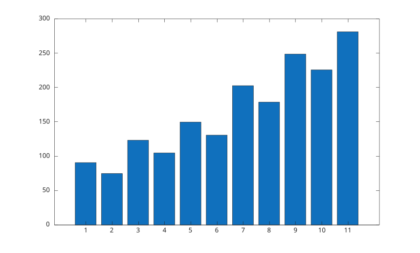
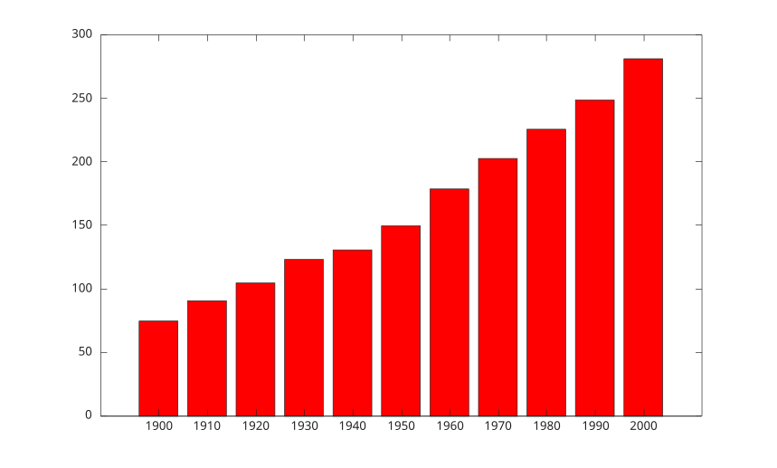
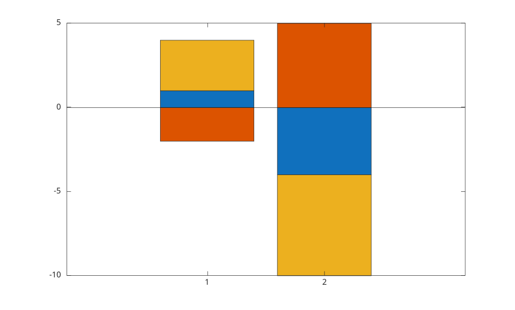
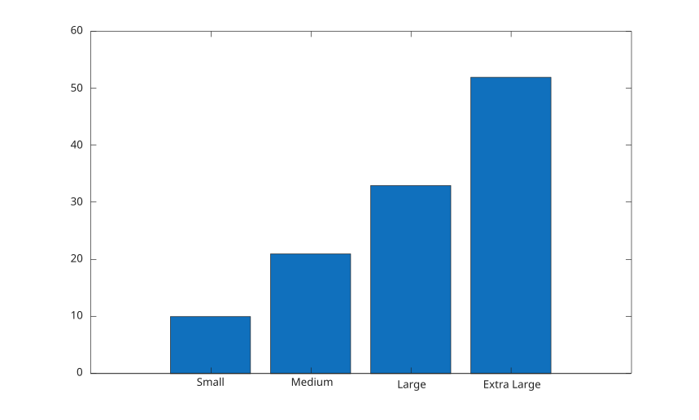
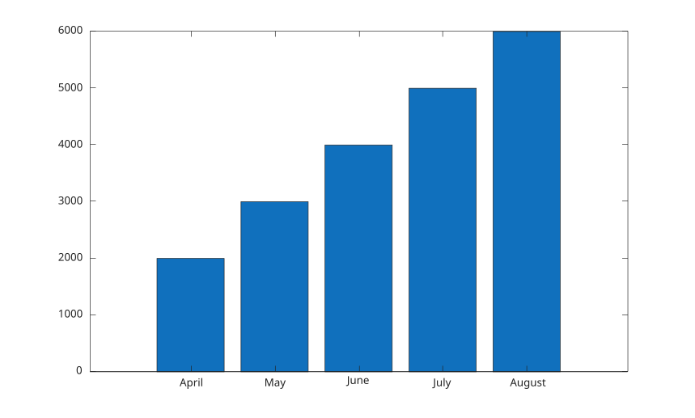
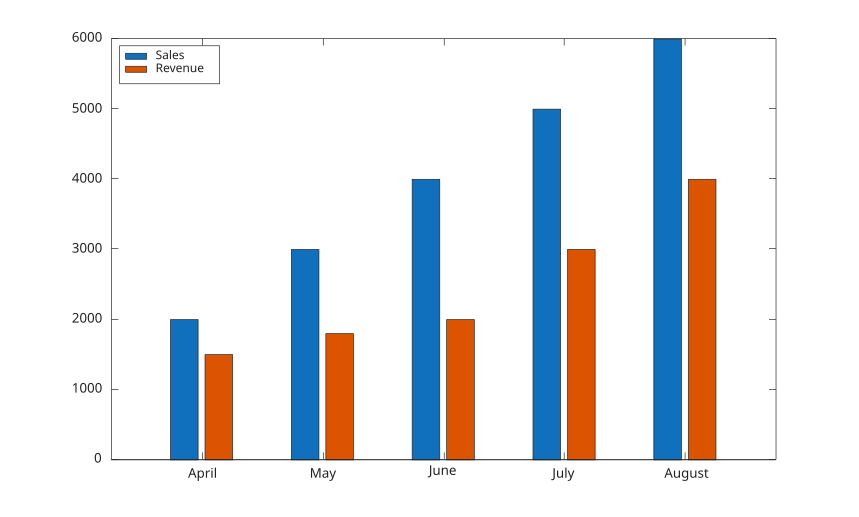

Exemples
Diagramme en barres depuis un vecteur.
f = figure();
y = [91 75 123.5 105 150 131 203 179 249 226 281.5];
bar(y);
Diagramme avec des barres plus etroites.
f = figure();
y = [91 75 123.5 105 150 131 203 179 249 226 281.5];
bar(y, 0.5);
Diagramme avec positions explicites et couleur.
f = figure();
x = 1900:10:2000;
y = [75 91 105 123.5 131 150 179 203 226 249 281.5];
bar(x, y, 'r');
Diagramme avec etiquettes de chaines.
f = figure();
x = ["Summer", "Spring", "Winter", "Autumn"];
y = [2 1 4 3];
bar(x, y);
Diagramme avec proprietes de face et de contour.
f = figure();
y = [91 75 123.5 105 150 131 203 179 249 226 281.5];
bar(y, 'FaceColor', [0 .5 .5], 'EdgeColor', [0 .9 .9], 'LineWidth', 1.5);
Barres groupees.
f = figure();
y = [1 2; 3 4; 5 6];
bar(y, 'grouped');
Barres empilees avec valeurs positives et negatives.
f = figure();
y = [1 -2 3; -4 5 -6];
bar(y, 'stacked');
Barres empilees a une position scalaire.
f = figure();
x = 2020;
y = [30 50 23];
bar(x, y, "stacked");
Diagramme avec etiquettes categoriales.
f = figure();
X = categorical({'Small', 'Medium', 'Large', 'Extra Large'});
X = reordercats(X, {'Small', 'Medium', 'Large', 'Extra Large'});
Y = [10 21 33 52];
bar(X, Y);
Diagramme depuis une variable de table.
f = figure();
Month = ["April"; "May"; "June"; "July"; "August"];
Sales = [2000; 3000; 4000; 5000; 6000];
Revenue = [1500; 1800; 2000; 3000; 4000];
tbl = table(Month, Sales, Revenue);
bar(tbl.Month, tbl.Sales);
Barres groupees depuis plusieurs variables de table.
f = figure();
Month = ["April"; "May"; "June"; "July"; "August"];
Sales = [2000; 3000; 4000; 5000; 6000];
Revenue = [1500; 1800; 2000; 3000; 4000];
tbl = table(Month, Sales, Revenue);
bar(tbl.Month, [tbl.Sales, tbl.Revenue]);
legend({'Sales', 'Revenue'}, 'Location', 'northwest');